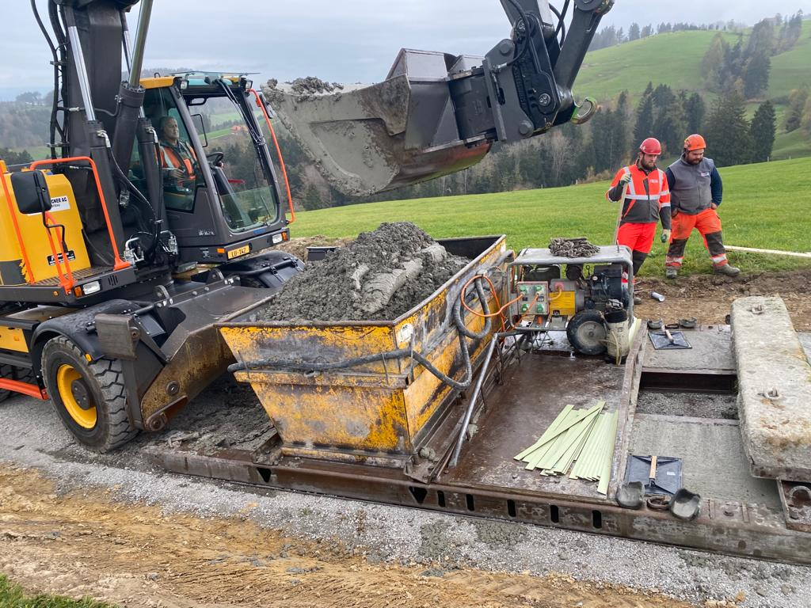
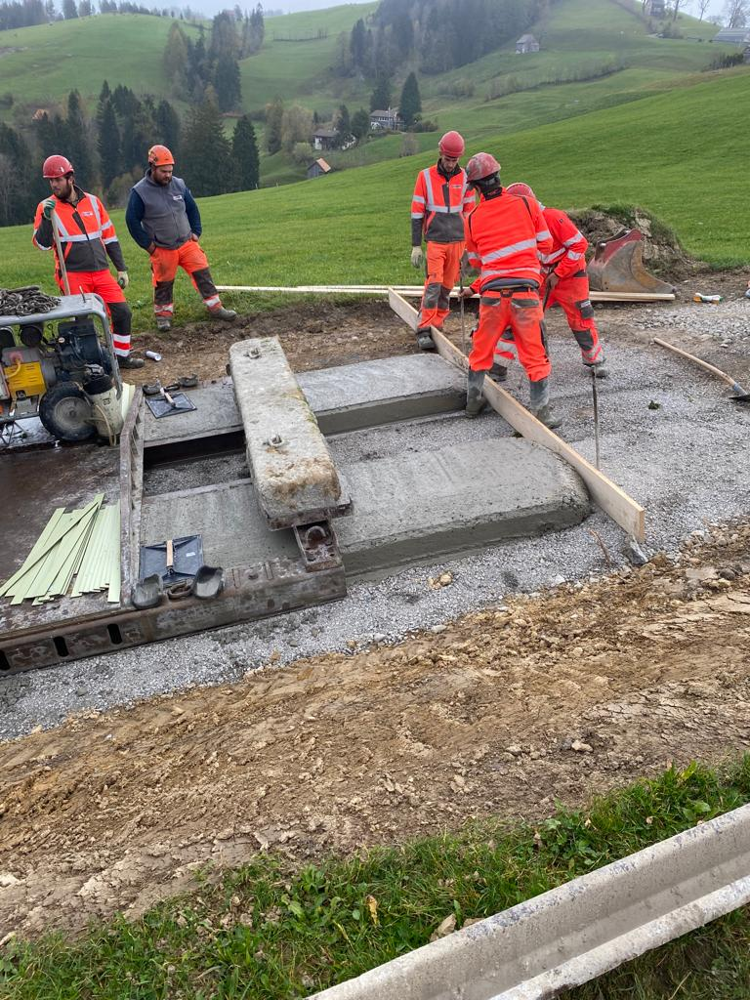
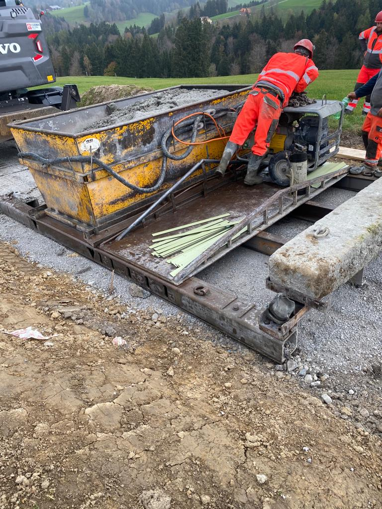
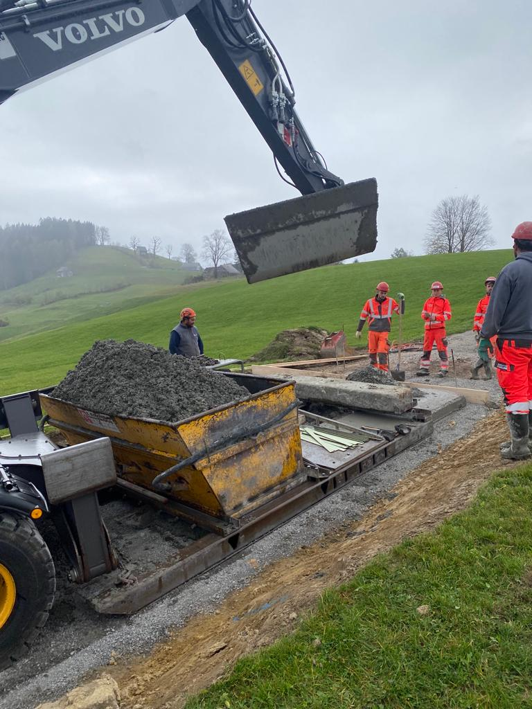
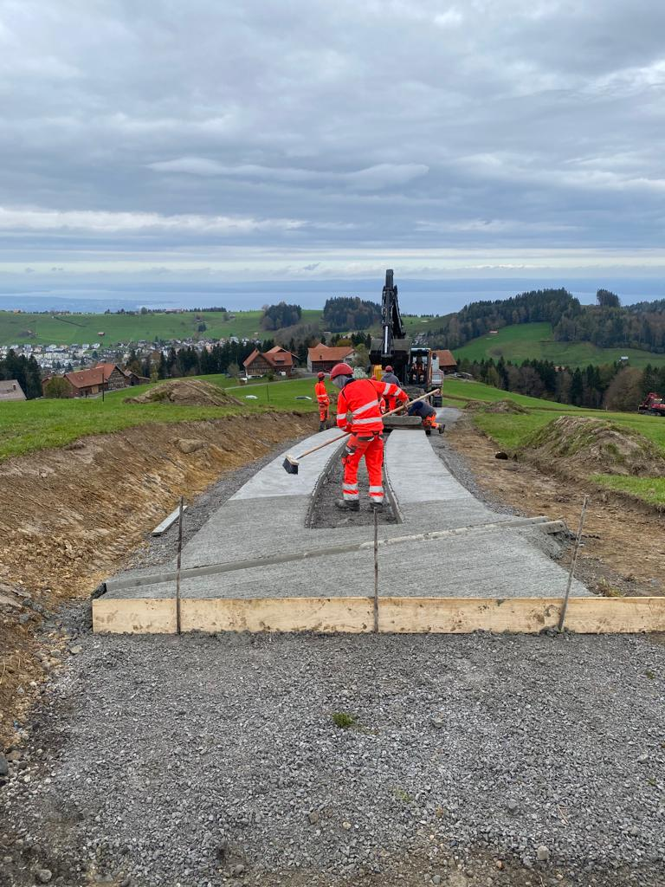
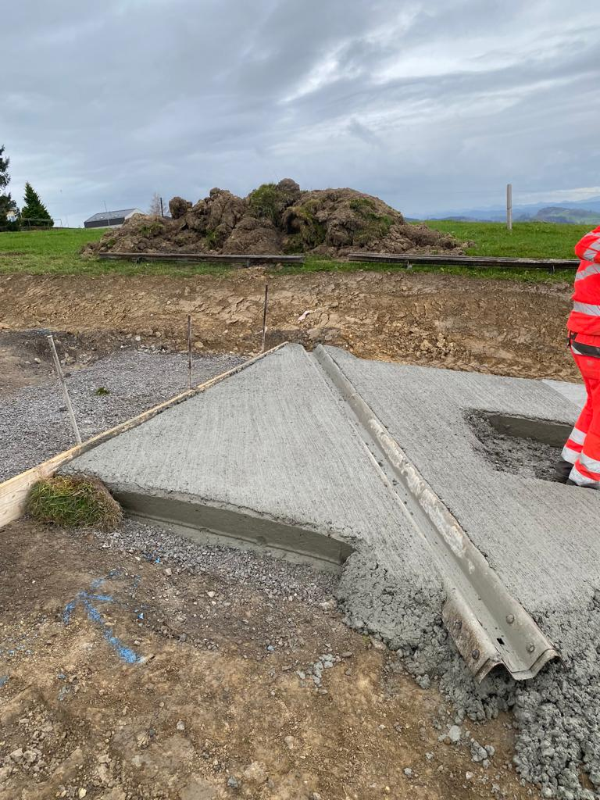
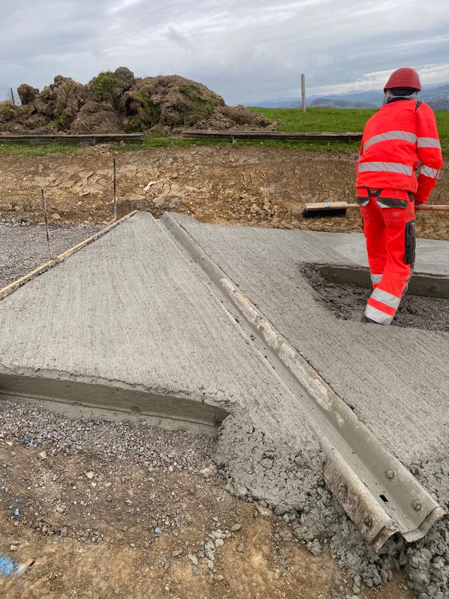
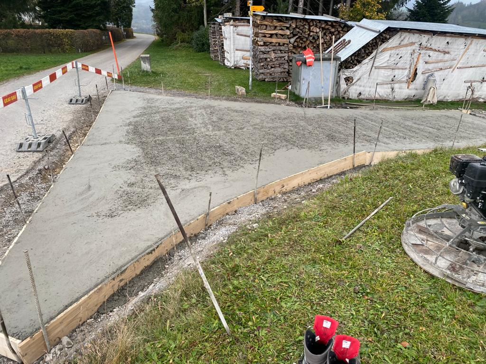
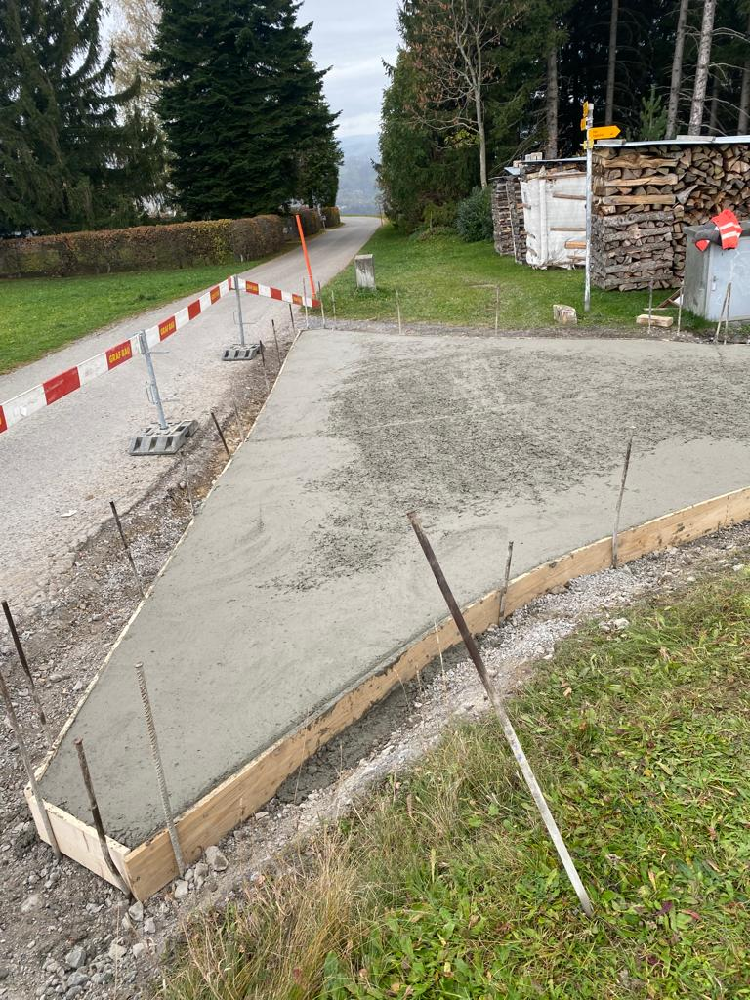
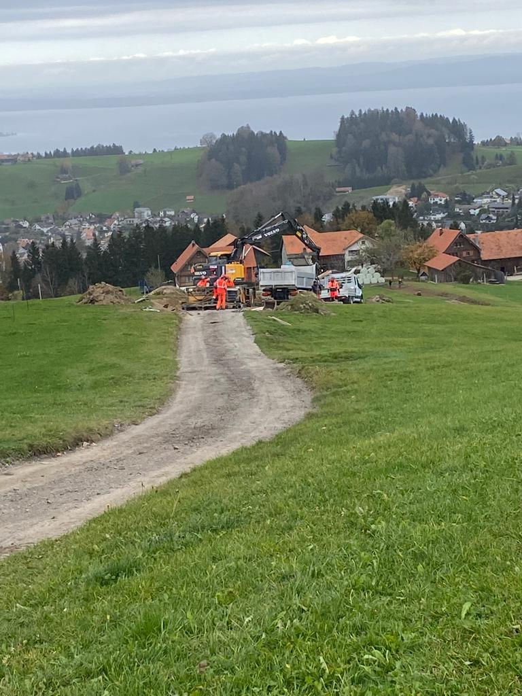

Der vorgesehene Erbauer steht seit dem 13.08.2026 nicht mehr zur Verfügung, gebraucht wird
das Gerät im September. Zeichnung und Statik sind fertig und bewusst so gehalten, dass eine
fremde Werkstatt ohne Vorwissen danach bauen kann.
Drei Wege – Entscheid Bauführung
Eigene Werkstatt Erstfeld – Zeichnung + Stückliste liegen vor, ≈ 760 kg Stahlbau, 14 Positionen.
Externer Stahlbauer – die Unterlage ist vergabefähig, keine Sonderwerkstoffe.
Gar nicht selber bauen: die E. Gloggner AG baut solche Spuren gewerblich ein
(sie hat es in Rehetobel gemacht) – Angebot für den Einbau im Unterakkord einholen.
Ebenfalls offen: Wo liegt das Prototyp-Material aus der Bestellung vom Juni
(Protokoll Abstimmungssitzung 43, 22.06.2026)?
Worum es geht
Ein gezogener Schlitten, der die Betonspur der Baupiste in einem Zug einbaut: Beton aus der Mulde
läuft in eine Kammer, wird verdichtet und hinter der Abziehbohle als fertige Spur abgelegt.
Vorbild ist der Schlitten, mit dem die E. Gloggner AG 2022 in Rehetobel zwei Fahrspuren
eingebaut hat.
3.00 m
Spurbreite (Vorgabe)
16 cm
Betondicke, durchgängig
20 %
max. Längsneigung (Alphüttenstrasse)
2.5 t
Betriebsgewicht mit Mulde + Ballast
42 kN
Zugkraft im Betrieb
0.85 m
Spur je Muldenfüllung (0.4 m³)
Die drei Stellen, an denen so ein Schlitten bricht
Der Frischbetondruck ist nicht das Problem: 7.5–12.5 kN/m², die Bleche sind zu
13 % ausgelastet. Gefährlich ist anderes.
1
Die Zugkraft reisst den Querträger auf
Kette mittig angeschlagen – so wie beim Vorbild – macht aus dem Querträger einen
Einfeldträger über 3.3 m mit Einzellast in der Mitte. Lösung: A-Deichsel, Zugauge 1 m vor
dem Rahmen, zwei Streben in die Seitenwangen. Gleiche Kraft, elffach kleineres Moment.
Kette mittig: M = 90 kN · 3.30 m / 4 = 74 kNm
RHS 200×100×8 → η = 1.20 bricht
A-Deichsel: N = 90 / (2 · cos 41°) = 59.6 kN
RHS 100×60×5 → η = 0.19 hält
2
Der Bagger ist stärker als jede sinnvolle Konstruktion
Ein 20-Tönner zieht am Haken rund 120 kN – das Dreifache der Betriebszugkraft.
Bleibt der Schlitten an einem Stein hängen, reisst der Rahmen. Deshalb gehört eine
definierte Sollbruchstelle in den Zugstrang.
Scherbolzen Ø18 mm, S235 blank (kein Vergütungsstahl!)
schert ab bei ≈ 55 kN · Betriebszugkraft 42 kN
→ 10 Ersatzbolzen ins Werkzeugfach
3
Die Vibronadeln zerstören die Schweissnähte
200 Hz heisst 5.8 Millionen Lastwechsel pro Schicht. Starr angeschweisste
Rüttlerhalterungen reissen innerhalb weniger Tage. Rüttler auf
Gummi-Metall-Puffer lagern und die Nähte nach der ersten Woche kontrollieren.
starr: Δσ = 64 N/mm² gegen 45 zulässig → η = 1.41
mit Puffern: Δσ = 9.6 N/mm² → η = 0.21
Zeichnung
Seitlich wischen zum Schauen · vollständige Blätter im PDF (3 × A3, Massstab 1:25).
Draufsicht: Die Zugkraft geht über die A-Deichsel in die beiden Seitenwangen –
nicht mittig in den Querträger.
Längsschnitt: Die Kufen laufen auf dem Planum, die Bohle ist 160 mm darüber fix
eingestellt – so hängt die Dicke nicht vom Betondruck ab.
Füllmarke 300 mm nie überschreiten – bei 500 mm schwimmt die Bohle auf und die Spur wird zu dick.
Beton erdfeucht (C0/C1) bestellen – weicher Beton läuft bei 20 % Neigung unter der Bohle weg.
Bergwärts betonieren – dann drückt der Hangabtrieb den Beton in die Kammer statt heraus.
Ruckfrei anfahren – ruckartiges Anreissen kostet den Scherbolzen und damit die Fuhre.
Vor jeder Etappe: beide Spindeln gleich einstellen, Bohlenunterkante plan, Kufen auf Verschleiss prüfen.
Nach der ersten Woche: Nähte an Deichsel, Zugauge und Rüttlerkonsole sichtprüfen.
Kranen nur am 4-Strang-Gehänge an den vier Anschlagpunkten (WLL 2.0 t), nicht am 1-t-Hebeband.
Vorbild: Rehetobel 2022
13 Fotos vom Einbau der zwei Fahrspuren an der Nordstrasse Rehetobel.
Wichtig: Die Maschine gehört der E. Gloggner AG – Graf Bau war der Bauunternehmer.
Detailfragen also dorthin. Tippen zum Vergrössern.
Zugkette mittig; Beton bleibt auf der Schaufel stehen

Bagger beschickt die Mulde direkt

Betonriegel als Auflast, Handrüttler, Abziehlatte

Aggregat und Rahmenrippen

Beton wird mit der Schaufel angeliefert

Ergebnis mit Besenstrich quer zur Fahrtrichtung

Randausbildung mit alter Leitplanke als Formteil

Kante und Anschluss im Detail

Seitliche Kanthölzer, mit Eisen gepflockt

Anschluss an die bestehende Strasse

Ausgangslage: Naturweg im Hang
Was noch entschieden werden muss
Wer baut – Werkstatt, externer Stahlbauer oder Einbau durch Gloggner (siehe oben).
Zugmaschine festlegen (Bagger, Raupe oder Seilwinde) – davon hängen Anhängehöhe und Zugpunkt ab.
Fliehkraft der Vibronadeln beim Hersteller abfragen (8 kN angenommen), Standorte mit Martin Schmid.
Quergefälle: eben oder mit Querabschlag für die Entwässerung.
Bewehrung und Fugen der Spur: Vorgabe bei ILF einholen – nicht Teil dieser Bemessung.
Statik gegenzeichnen lassen und Suva-Themen prüfen (Anschlagpunkte, Quetschstellen, Abstellen am Hang).
Grundlagen: Mail V. Malt an den Werksmeister Stahlbau vom 21.04.2026 («Betonspurfertiger/Betonschlitten»,
CC Borner/Decurtins): Spurbreite 3.00 m, Dicke 16 cm, durchgängig in der Breite ·
Mail U. Decurtins an ILF vom 05.09.2025: Längsneigung bis 20 %, sonst spült die Strasse aus ·
Protokoll Abstimmungssitzung 43 vom 22.06.2026: Prototyp-Material bestellt, Bedarf September ·
Fotos graf-bau.ch, Projekt «Sanierung Nordstrasse, Rehetobel» 11/2022, Einbau E. Gloggner AG.
Rechenweg: SIA 262 / DIN 18218 (Frischbetondruck), SIA 263 (Stahlbau), Kerbfall 71 für die
Ermüdung. Reibungswinkel und Kohäsion des Frischbetons sind begründete Annahmen – beim ersten
Einsatz prüfen, ob der Scherbolzen hält. Stand 14.08.2026, Status Entwurf.